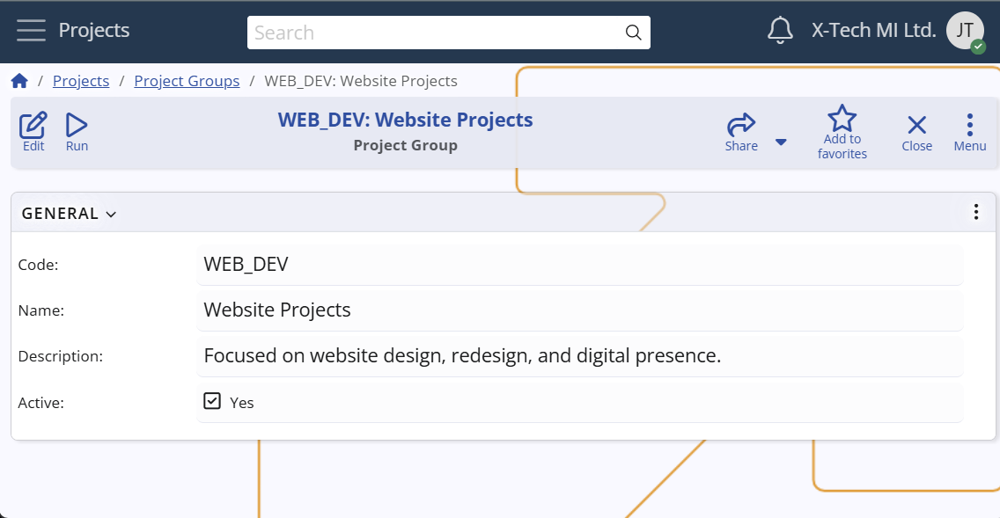

Project Groups
A Project Group in Agile PM represents a logical grouping of Projects that share common configurations such as Project Areas and Project Milestones. They provide a way to centrally manage shared structures across related Projects, without making them global for all Projects and Groups.
Each Project may belong to one Group, and any Areas or Milestones linked to that Group apply automatically to all its Projects.
For example:
A company manages various projects — such as Website Redesign, Campaign Launch, SEO Optimization, Mobile App, API Platform, and Reporting Module.
Some of these projects share common structures that are not relevant to the others.
Instead of duplicating the same areas and milestones in each project, or defining them globally where they would appear in unrelated projects, the company can organize them into Project Groups.
In this case, the company might define:
- a Marketing Projects group for Website Redesign, Campaign Launch, and SEO Optimization
- a Product Development Projects group for Mobile App, API Platform, and Reporting Module
This way, marketing projects can share milestones like "Campaign Live", while product development projects can share areas like "Release Management", without interfering with each other.
To explore how Project Areas and Project Milestones are set up in detail,
and how their scope is controlled by Projects and Project Groups, see the respective documentation pages.

Creating a Project Group
Defining a Project Group is a simple process — you only need to provide:
- a Code (unique identifier),
- a Name,
- and optionally a Description of the group’s scope or purpose.
This makes Project Groups lightweight structures that are easy to set up and maintain.
However, to use Project Groups effectively, at least one Project should be associated with them.
Without assigned Projects, a Project Group exists as a definition but does not provide practical benefits.
Configuration path: Project Group definition → General panel → Code, Name and Description fields
Display panel name: General
System panel name: Project Group
